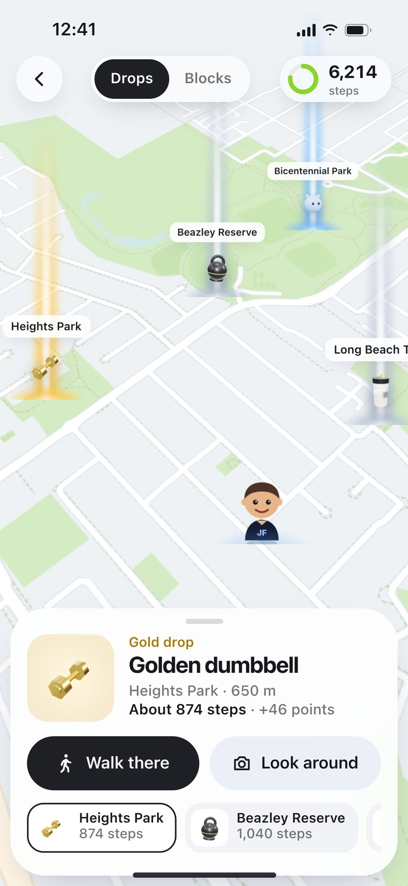
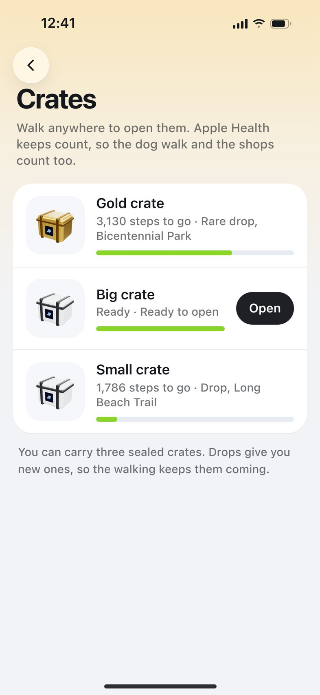
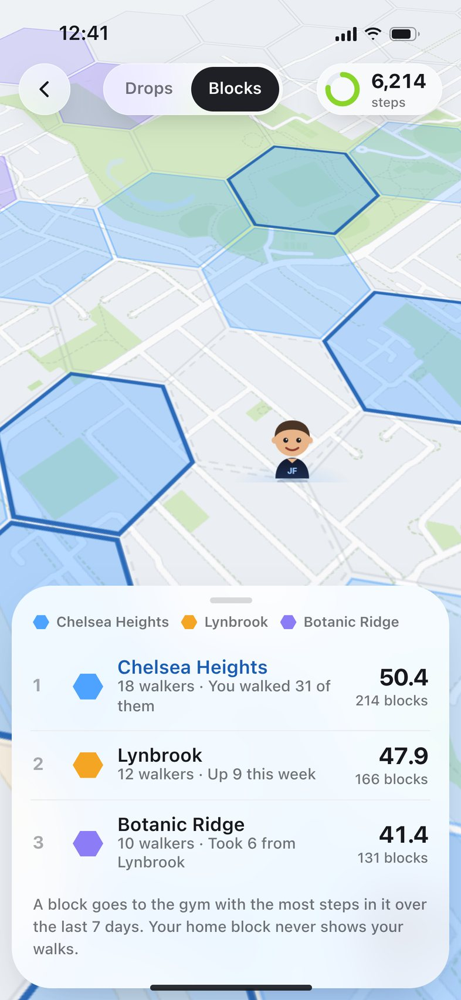
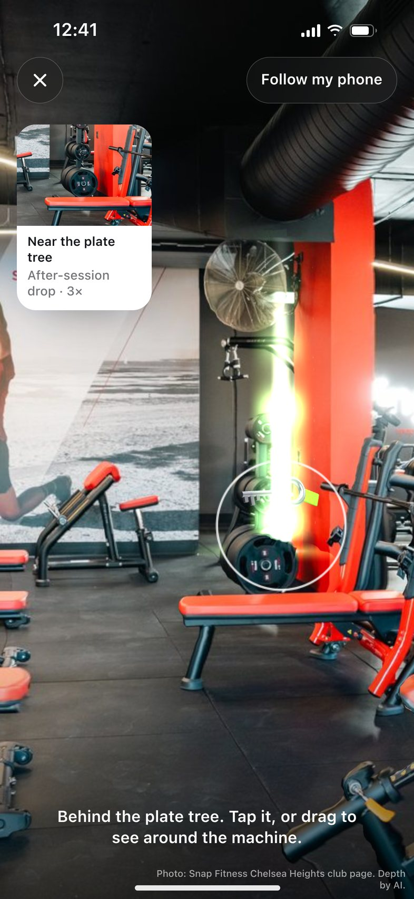

Four things.
All built around walking.
It lives inside the Challenge tab you already have, as the live mode of the club map. Same points, levels, inventory and JFmoji.
Drops
Three a day, on footpaths inside real parks, 400 m to 1.5 km from your home area. You have to be there to open one. No ticking it off from the couch.
- Shown in steps, not just metres. The camera is optional.
- A shared rare drop each week for your gym
- An optional "10 push-ups here?" bonus

Crates
Drops give sealed crates. Crates open with steps walked anywhere: 2,000, 5,000 or 10,000. The dog walk counts. The shops count.
- Inspired by Pokémon's eggs: progress from everyday walking
- A free crate every Monday, so normal walking always pays
- Inside: trinkets, JFmoji wearables, points

Blocks
Your walks paint the map in your gym's colour. A block belongs to whichever gym walked it most this week, so it fades unless people keep walking there.
- Gym against gym, scored fairly for small gyms
- Never shows a person, only a gym colour
- Your home block never records you

Gym drops
Gabrielle's idea. As a booked session ends, something's hidden in the gym, worth 3×. A small JF plaque on a machine, moved weekly by the trainer. The camera finds it.
- Shows as the session ends, so nobody's on their phone mid-set
- The clue is a photo of the corner
- Last week's code expires, and a scan only counts after your own session there
